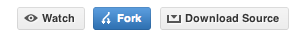
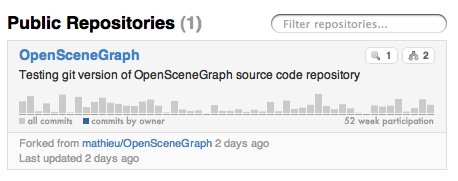

Code Repositories
OpenSceneGraph Github Repository:
http://github.com/openscenegraph/osg
Requisits
git, obviously :
- on Windows :
- command line with msysgit
- explorer integration with TortoiseGit
- on Mac :
- command line git installer
- gitk : comes in with git and is a graphical local repository browser
- [http://gitx.frim.nl/GitX ]
- on Linux
- git : command line : sudo apt-get install git-core
- gitk : graphical local repository browser : sudo apt-get install gitk
- git-gui : A Tcl/Tk based graphical user interface to Git sudo apt-get install git-gui
Background reading on git
Pro Git Book or Git Community Book is a good start ! But you might be more interested in the Git - SVN Crash Course : git explained to svn users.
Also have a look at Why git is better than X
Workflow
Read-Only
This workflow is intended for users who need to stay on top of OpenSceneGraph activity but do not intend to modify it for they own need nor contribute some enhancements or bug correction back.
Initial checkout
Update
Contributor
When planning to contribute to OpenSceneGraph you need to record your changes so they can be pulled into the upstream by the maintainer. This is largely inspired from Michael Norton's blog entry Doc On Dev : 'Contributing to a project you find on GitHub'
You will need a GitHub account
1. Fork the OpenSceneGraph project
Login to github. Go to http://github.com/openscenegraph/OpenSceneGraph's git mirror project

To create a fork, press the "fork" button on the project's page.
When the fork is complete, you will have a copy of the project in your repositories listing.

2. Clone your project
Now back on your computer you need to clone your fork. Make sure you use the “Your Clone URL” and not the “Public Clone URL”. You want to be able to push changes back to your own repository.
Once the clone is complete your repo will have a remote named “origin” that points to your fork on github. You will use "origin" for your own regular activities.
origin This email address is being protected from spambots. You need JavaScript enabled to view it.:[your-github-account]/osg.git (fetch)
origin This email address is being protected from spambots. You need JavaScript enabled to view it.:[your-github-account]/OpenSceneGraph.git (push)
3. Link your repository to the upstream
- upstream
- repository that you forked
To keep track of the modifications committed to the 'upstream' branch of the project you need to add a remote branch to your local repository
You should now have another remote :
origin This email address is being protected from spambots. You need JavaScript enabled to view it.:[your-github-account]/OpenSceneGraph.git (fetch)
origin This email address is being protected from spambots. You need JavaScript enabled to view it.:[your-github-account]/OpenSceneGraph.git (push)
upstream git://github.com/openscenegraph/OpenSceneGraph.git (fetch)
upstream git://github.com/openscenegraph/OpenSceneGraph.git (push)
4. Create a branch containing your contribution
First step is to create a branch to make your modifications. Lets call it topic :
Switched to a new branch 'topic'
~/OpenSceneGraph (topic)$ git branch
master
* topic
Now make your modifications to the project and commit them to your topic branch.
5. Keep your fork up-to-date
Forking a repository is the recommended way of contributing to a github project. Alas it doesn't get updated with the latest commits from the forked repository.
The upstream remote we added in the previous topic will help you update your repository with those latest changes by pulling and then merging in them in as so :
Now your local upstream/master should contain all the new commits. You can merge them to your master branch.
6. Keep your contributions up-to-date
When updating your repository with the upstream's modifications it is likely that your topic branch will need to integrate those changes too. This is called rebasing. This will modify your topic branch commits (yes, it will create some new commits) to make the topic branch start from the latest commits in the upstream repository.
7. Submitting your contribution
See submissions page